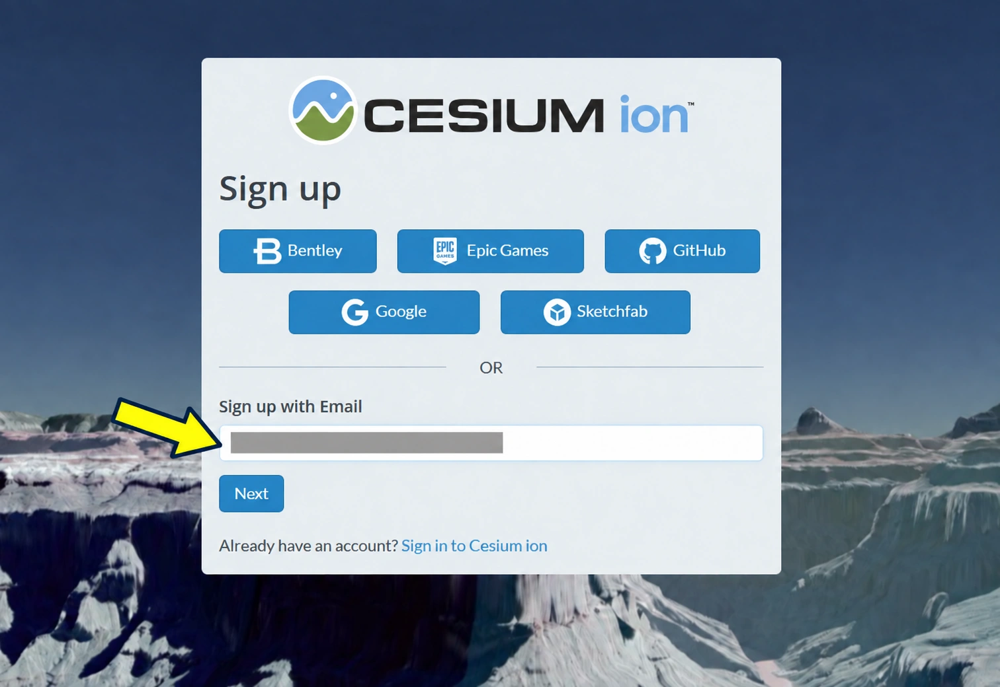
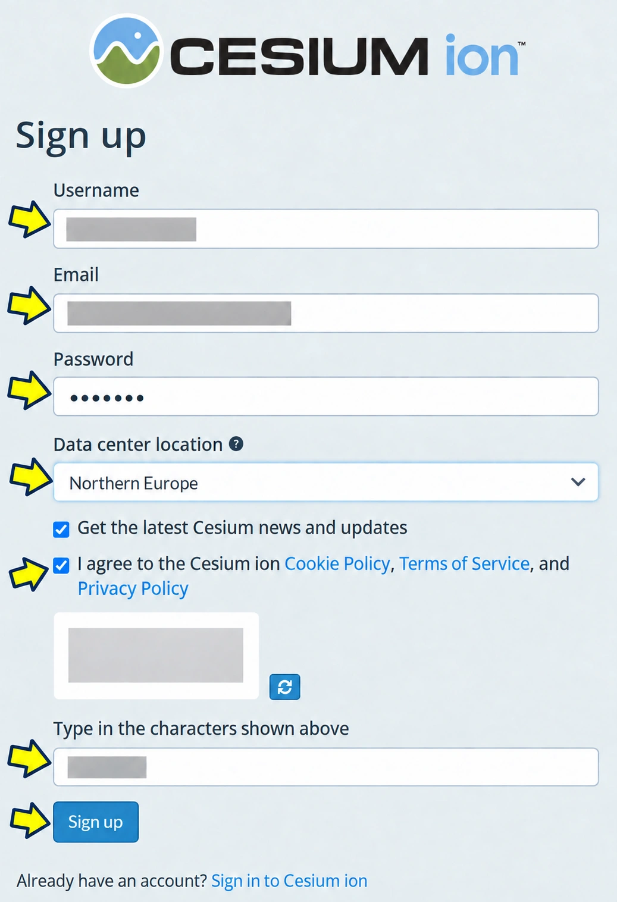
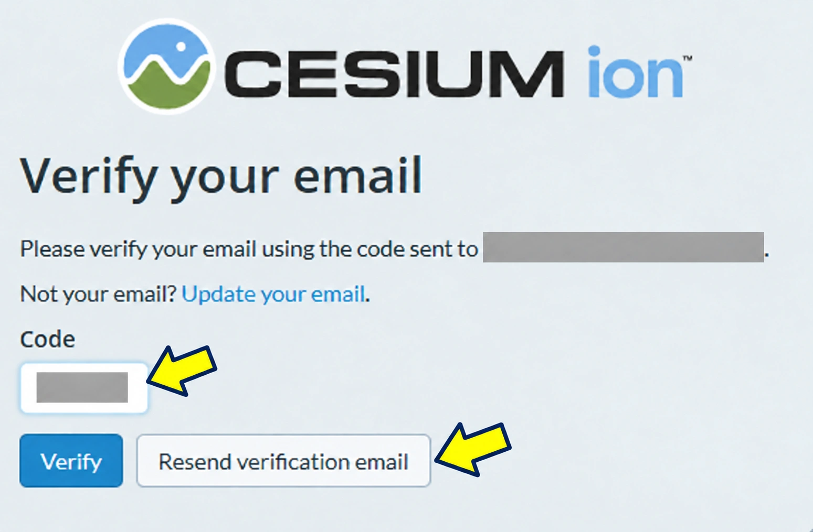
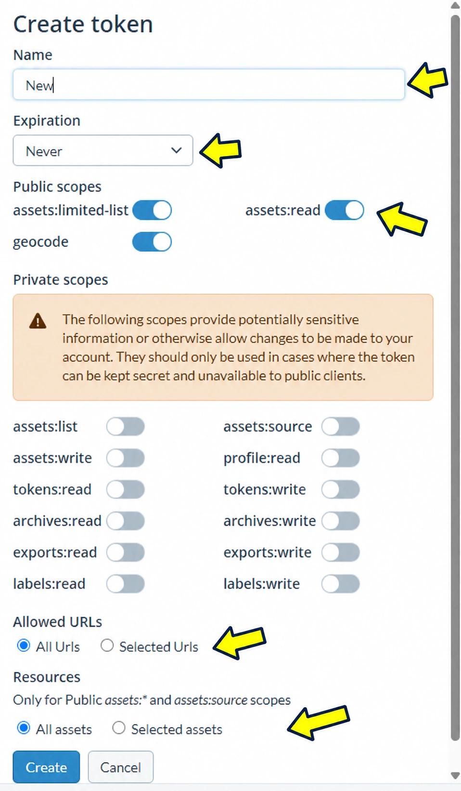
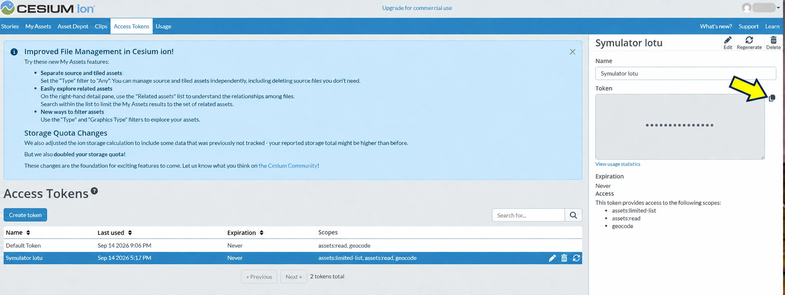
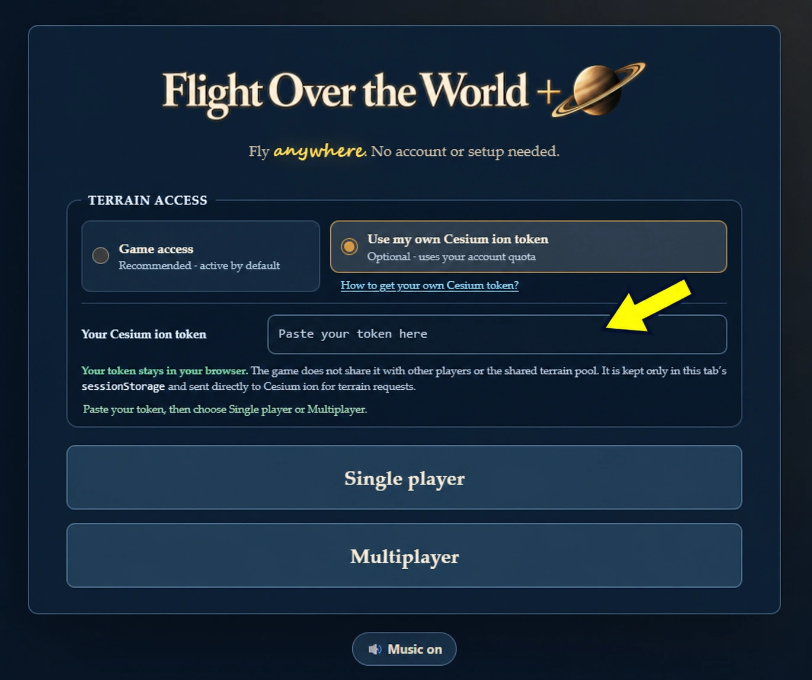

Jak uzyskać własny token Cesium ion?
Domyślny dostęp do mapy jest aktywny od razu. Własny token jest opcjonalny i korzysta z limitu Twojego konta Cesium ion.
1 Rozpocznij rejestrację lub zaloguj się
- Otwórz ion.cesium.com.
- Możesz użyć widocznego dostawcy logowania albo wpisać swój adres w Sign up with Email i nacisnąć Next.
- Jeżeli masz już konto, wybierz Sign in to Cesium ion.

2 Uzupełnij dane konta
- Wpisz nazwę użytkownika, e-mail i własne silne hasło.
- Wybierz odpowiednią lokalizację centrum danych.
- Subskrypcja wiadomości Cesium jest opcjonalna. Zaakceptuj wymagane warunki i politykę prywatności.
- Rozwiąż aktualną CAPTCHA, wpisz jej znaki i wybierz Sign up.

3 Zweryfikuj adres e-mail
- Otwórz najnowszą wiadomość weryfikacyjną od Cesium.
- Wpisz otrzymany kod w pole Code i wybierz Verify.
- Jeśli adres na ekranie jest błędny, użyj Update your email.

4 Dodaj dane mapy do swojego konta
- Po zalogowaniu otwórz Asset Depot.
- Wyszukaj Google Photorealistic 3D Tiles.
- Sprawdź identyfikator assetu
2275207i wybierz Add to my assets. - Upewnij się, że zasób jest widoczny w My Assets. Jeśli już tam jest, nie dodawaj go ponownie.
Aktualny opis uruchamiania tego zasobu znajduje się także w oficjalnej instrukcji Photorealistic 3D Tiles.
5 Otwórz Access Tokens
- W górnym menu panelu ion wybierz Access Tokens.
- Wybierz Create token. Utwórz osobny token tylko dla gry zamiast używać Default Token.
- Przejdź do formularza konfiguracji pokazanego w następnym kroku.
6 Skonfiguruj bezpieczny token
Uwaga: screenshot pokazuje formularz w stanie początkowym. Nie kopiuj widocznego zestawu przełączników jeden do jednego — zastosuj poniższe ograniczenia.
- W polu Name wpisz np.
Flight Over the World +. - Jeśli panel oferuje termin ważności, wybierz okres odpowiadający Twojemu użyciu. Przy Never pamiętaj o ręcznym cofnięciu tokenu, gdy przestanie być potrzebny.
- W sekcji Public scopes pozostaw włączone tylko
assets:read. - Wyłącz
assets:limited-listigeocode— gra zna identyfikator assetu i używa wyszukiwarki Photon/OSM, więc te zakresy nie są potrzebne. - Pozostaw wyłączone wszystkie Private scopes, w tym odczyt profilu, list, archiwów, eksportów i tokenów oraz wszystkie uprawnienia zapisu.
- W Allowed URLs wybierz Selected Urls i dodaj
https://headlost.github.io— bez ścieżki/flight-over-the-world-plus/. - W Resources wybierz Selected assets i tylko Google Photorealistic 3D Tiles o ID
2275207.
Dla lokalnego Vite dodaj osobno dokładny origin widoczny w przeglądarce, np. http://127.0.0.1:5173 albo http://localhost:5173. Nie zostawiaj All URLs ani All assets, jeśli nie jest to potrzebne.

assets:read, a zaznaczone opcje to Selected Urls i Selected assets.7 Utwórz i skopiuj token
- Sprawdź ustawienia i wybierz Create.
- Zaznacz nowy token na liście. Po prawej pojawi się panel szczegółów.
- Użyj ikony kopiowania wskazanej żółtą strzałką.
- Nie wklejaj wartości tokenu do czatu, wiadomości, zgłoszeń, README, kodu, pliku
.env, commita ani zrzutu ekranu.

8 Wklej token w grze
- Otwórz Flight Over the World +.
- Na ekranie startowym wybierz Use my own Cesium ion token.
- Wklej token w pole Paste your token here wskazane strzałką.
- Uruchom Single player albo Multiplayer.
Opcja Game access pozostaje zalecana i aktywna domyślnie. Własny token jest opcjonalny i zużywa limit konta jego właściciela.

sessionStorage tej karty i wysyła bezpośrednio z przeglądarki do Cesium ion, aby pobierać teren. Nie trafia do localStorage. Zamknięcie karty usuwa ten zapis. Odrzucony własny token nie jest automatycznie zastępowany dostępem operatora — aby wrócić do niego, jawnie wybierz Game access.
Token używany w aplikacji WWW nie jest hasłem: skrypty działające w tej samej witrynie mogą odczytać sessionStorage, a przeglądarka musi wysłać token do Cesium. Dlatego ogranicz zakres, asset i Allowed URLs oraz kontroluj zużycie swojego konta.
Gdy coś nie działa
- Brak wiadomości weryfikacyjnej: sprawdź Spam/Junk/Oferty, odśwież skrzynkę, kliknij raz Resend verification email i w razie potrzeby wyloguj się oraz zaloguj ponownie do poczty. Użyj najnowszego kodu.
- 401 / invalid token: token jest błędny, niepełny albo cofnięty — skopiuj go ponownie lub utwórz nowy.
- 403 / access denied: sprawdź
assets:read, asset2275207w My Assets, wybór Selected assets oraz wpisy Allowed URLs. - 402 albo 429 / quota or rate limit: sprawdź zużycie i plan własnego konta. Kolejny token na tym samym koncie nie zwiększa jego limitu.
- Chcesz wrócić do dostępu gry: wróć do ekranu startowego i wybierz Game access.